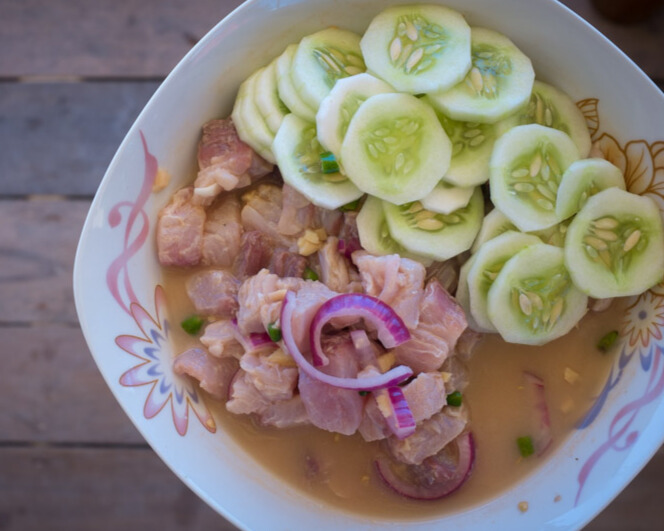
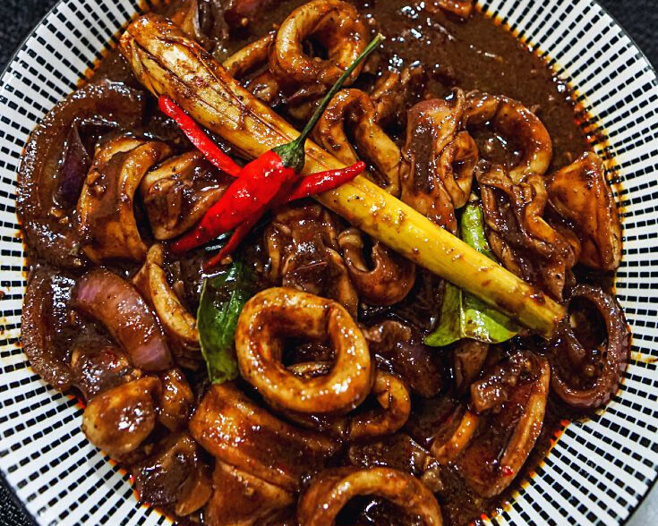
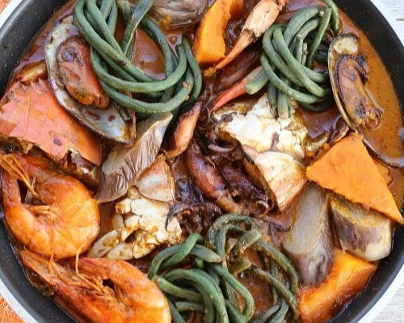
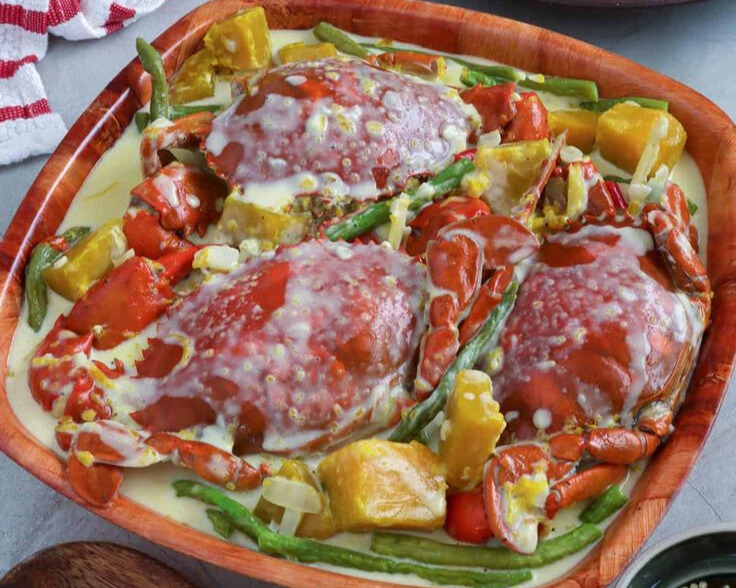
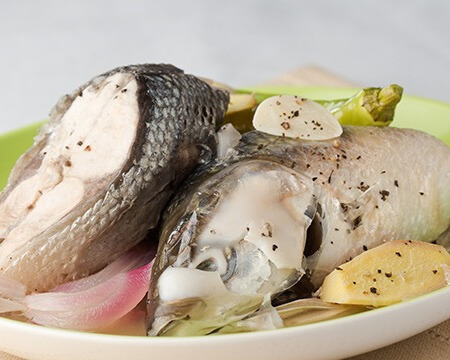
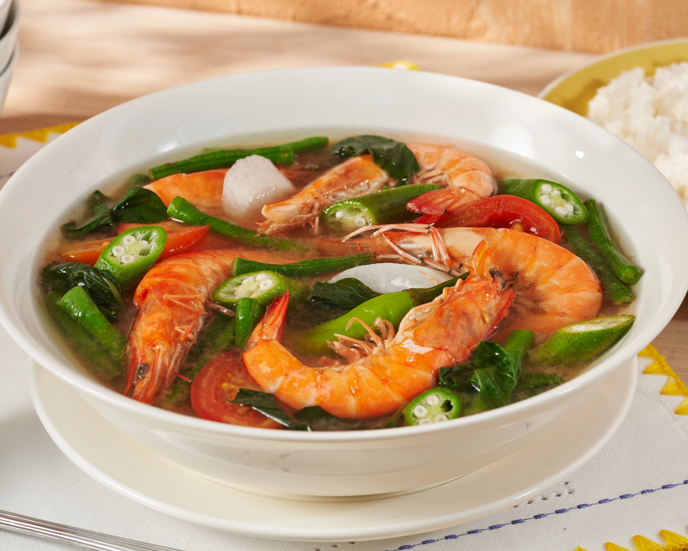
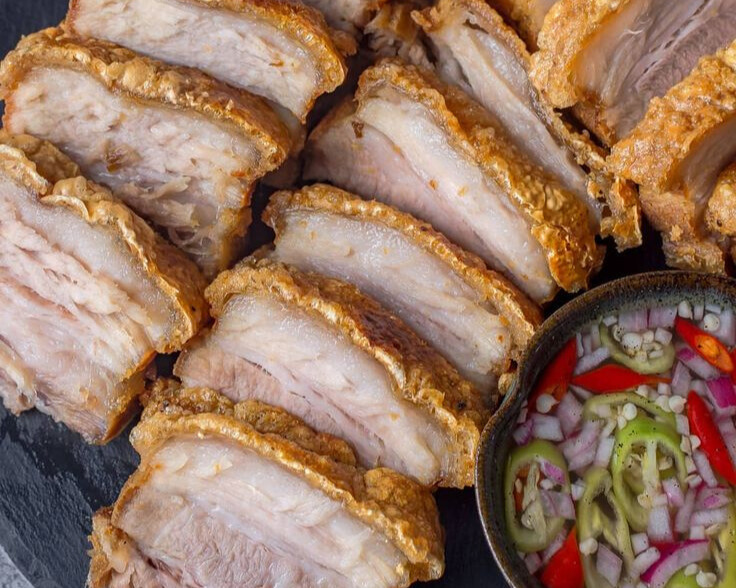

Kinilaw na Isda
Freshly caught fish marinated in vinegar, calamansi, ginger, onions, and chili. Siargao’s version often uses tangigue (Spanish mackerel) and coconut vinegar.

Adobong Pusit (Squid Adobo)
Tender squid cooked in its ink with garlic, vinegar, and soy sauce. Popular by the beach!

Seafood Kare-Kare
A local twist on the peanut stew using crab, shrimp, and squid instead of oxtail.

Inihaw na Panga ng Tuna
Grilled tuna jaw, smoky and juicy, served with soy-vinegar dip and rice.

Ginataang Alimasag (Crabs in Coconut Milk)
Mud crabs simmered in creamy coconut milk with leafy greens and chili – rich and flavorful.

Paksiw na Isda
A vinegar-based fish stew with eggplant, bitter gourd, and garlic – simple, sour, and savory.

Sinigang na Hipon
Shrimp in tamarind-based sour soup with vegetables – a refreshing coastal comfort dish.
Inasal na Manok (Grilled Chicken)
Visayan-style marinated chicken grilled to perfection, often served with spicy soy-vinegar sauce.

Lechon Kawali with Sukang Pinakurat
Crispy pork belly served with local spicy vinegar made in Mindanao – crunchy outside, juicy inside.